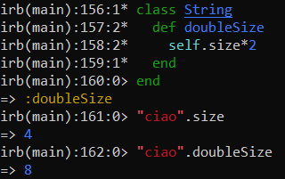

Open Classes
Ruby differently from other OO languages, when we close the class definition, allows to open a defined class in order to add other methods, constants and so on.
It is very easy. The syntax is the same as defining a class. Since the
example:String class already exists, the method “doubleSize” is added to it.
